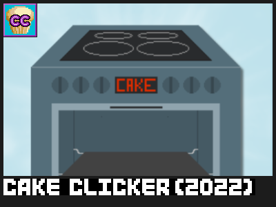

Cake Clicker (2022)
By Fractyl (Fractylizer)
Released on 9/26/2022
The game is about making as much cake as possible.
Game Link - https://orteil.dashnet.org/igm/?g=qP8GfbCT
Related Games
Cake Clicker (Old) (older version from 2021)
Game Details
In Cake Clicker, you click an oven to bake muffins. You can buy ovens that do this automatically, and you expand your business from there. From pesticides to nuclear power to atomic modification, you'll do anything to bake more cake.
This game was posted in r/idlegamemaker and the Dashnet Forums discord.
The game is a remade version of the original Cake Clicker, which was released about a year before this version. The newer version was made because Fractyl believed the old game was ugly and unorganized. Although this version was more tidy and visually appealing, it had less content than the older version. Cake Clicker received its final update on the 13th of May 2023 and will likely never receive another update.
(These details were written by Fractylizer on Github)
